Virtual Probing Example
In this example, we are not going to explain how to draw the entire example in the schematic editor. Many of the other examples step you through this process. We will examine a canned example found in the folder ./Examples/VirtualProbingExample/VirtualProbeExample.xml.
When we open this example using Open Project↓, we see the following:
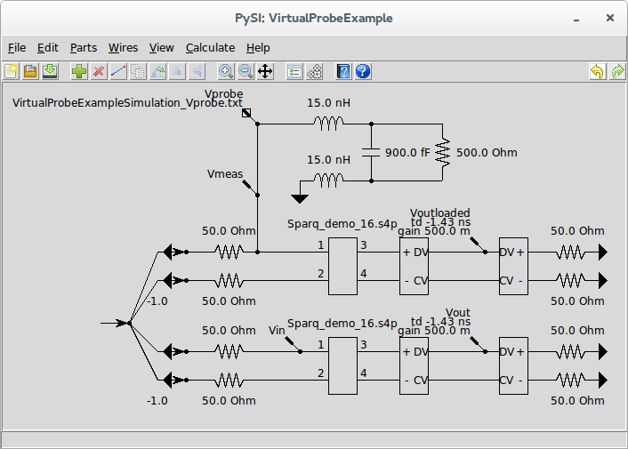
This example demonstrates many possible examples of virtual probing simultaneously. The top network containing inductors, a capacitor and a resistor is a probe loading model. This is a circuit which describes the effect that a probe has when inserted into a system. These models are generally published by manufacturers of high-frequency probes used for oscilloscopes. The probe loading model shown is for a single-ended probe.
The circuit beneath the probe loading model is the circuit being measured. Ignoring the stimuli for the moment, this circuit is for a 50 Ω differential source driving a differential transmission line represented by a four-port s-parameter File↓ device. The s-parameters are contained in the file Sparq_demo_16.s4p. Notice that the probe loading model is connected to the circuit at the input termination.
The final circuit at the bottom is an exact duplicate of the previously described circuit section except that it does not have the probe loading model connected.
In the probe loading model section where the probe is connected to the circuit, we have a Voltage Measure Probe↓ device (see Measure Probes↑ for more information). The measure probe is shows an input file name of VirtualProbingExampleSimulation_Vprobe.txt which is presumably a Waveform↓ file containing a waveform measured (by, for example an oscilloscope) while probing a circuit like the middle circuit section. In fact, in this contrived example, it is the output waveform of a SignalIntegrityApp Simulation↑ simulated under exactly these conditions.
Invoke Edit Properties↓ with the measure probe selected and press view to view the waveform in the Simulator Dialog↓:
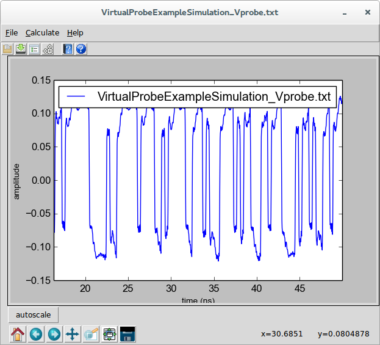
Throughout the rest of the schematic, we see various Voltage Output Probe↓ devices (see Output Probes for Virtual Probing↑ for more information). I will talk about these in a bit, but for now notice one interesting thing about the output probes named Voutloaded and Vout. These are in between two back-to-back Voltage Mixed Mode Converter↓ devices. These devices placed back-to-pack expose the plus and minus terminals of a single-ended line on each side and the differential- and common-mode lines in the middle. These devices connected in this arrangement have no effect on the circuit (the two plus pins or the two minus pins could even be shorted together if you wanted). Thus, these output probes are probing the differential output at the output termination.
Note that these output probes have keyword/values of td -1.43ns and gain 0.5. The gain is the gain applied to the output waveform. Since the input waveform is a single-ended measurement it is half the size of the differential waveform. We want to see relative changes is size, so we put the differential waveforms on the same relative scale as the single-ended waveforms. The time delay of -1.43 ns is to account for the delay through the channel. This was estimated by examining the s-parameters of the file Sparq_demo_16.s4p. You can do that by selecting the four-port fileFile↓ device, double-clicking on it to invoke Edit Properties↓ and then pressing view to invoke the S-parameter Viewer↓.
Selecting S31, we have:
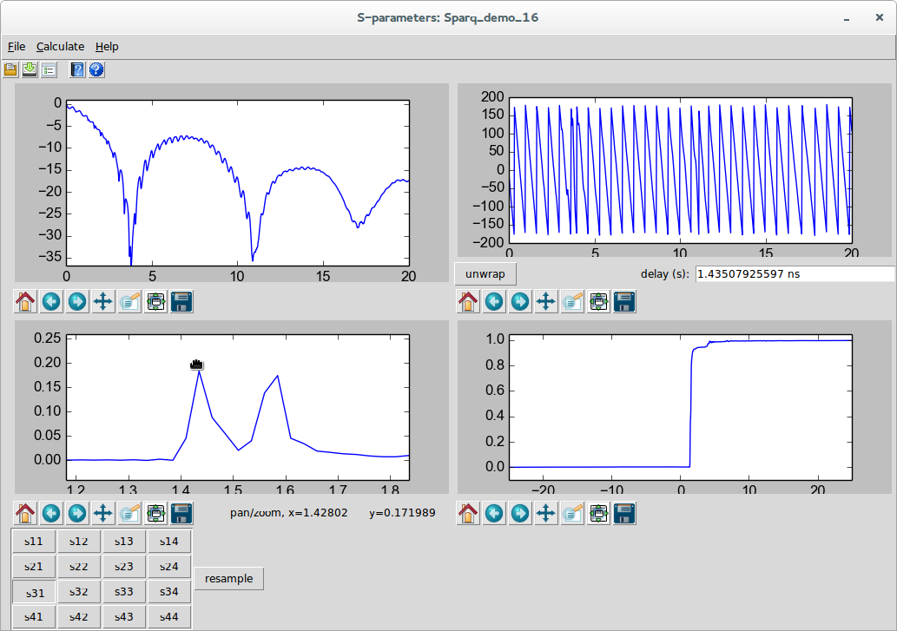
and by selecting S41, we have:
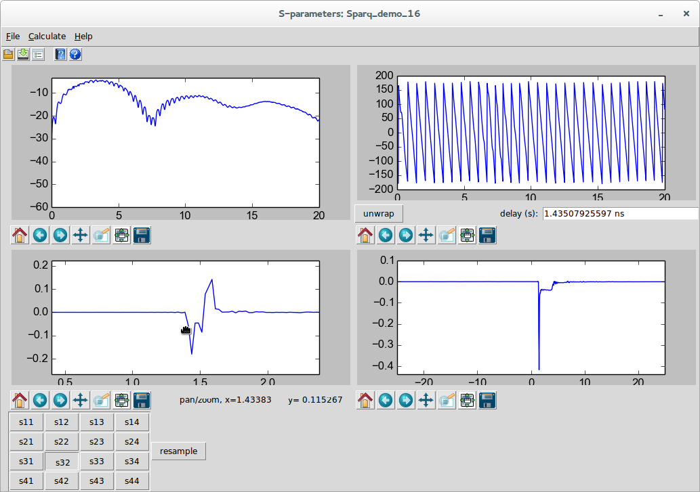
Since there are multiple spikes in the impulse response, the differential time delay through the channels is roughly the time of the positive going spike in the S31 that goes with the negative going spike in the S32.
Regarding the Stimuli↑, we see four dependent stimuli and one independent stimuli. The dependent stimuli are connected to the pin of each Ground↓ device representing the transmitters (remember, a voltage source looks like a short with waves emanating from it). These grounds are connected through a small piece of wire to the pins of 50 Ω resistors. (see Stimuli↑ for why this small piece of wire is necessary). A Stim↓ is connected with the arrow touching each pin of the grounds, meaning the stimulus emanates from the grounds.
An independent stimulus is all the way to the left with wires connecting the arrow tip of the independent stimulus to the back of each of the stims. This means that the other stimuli depend on this stimulus. Note that in each of the circuit sections, the weights of the two bottom stims are -1.0 (the others are 1.0 and not shown). This means that the top stim in each circuit is the same as the independent stimulus and the bottom stim in each circuit is the negative of the independent stimulus. What we are saying here is that the waves emanating from the differential transmitters are balanced. See Stimuli↑ for a discussion of this topic.
Now that we understand all of the interconnections, let’s understand what is the intent of this system.
We are providing a measured waveform Vprobe, and have output probes called:
- Vmeas - the measured input waveform at the transmitter. This waveform can be considered as the input waveform to the backplane with the probe loading the circuit.
- Voutloaded - the waveform at the receiver to be produced by Virtual Probing. This waveform is the output waveform with the probe loading the circuit.
- Vin - the waveform at the transmitter in the bottom circuit to be produced by Virtual Probing. This waveform is the input waveform to the circuit if the probe were not loading the circuit.
- Vout - the waveform at the receiver to be produced by Virtual Probing. This waveform is the output waveform without the probe loading the circuit.
Virtual Probe is being asked to provide these waveforms given a single, single-ended measurement at the transmitter.
So the problem being solved is three-fold:
- Voutloaded provides for a measurement in a different circuit location (the receiver) given a measurement taken at the transmitter.
- Vin provides for a measurement in the same system with the probe loading effects removed. In other words, it provides what the measurement would be were the probe perfect. In a sense, it is a deembedding of the loading effects of the probe.
- Vout provides for a measurement of the output waveform from a system, without the probe loading the system. This measurement is usually the actual goal. Note that this could be used for compliance testing of systems without having the actual backplane - and in fact could be used for monte-carlo testing of compliance if run with many different backplanes whose existance is virtual - in the form of s-parameter files. (These backplanes might not even exist and might be the product of other signal integrity analysis tools). All we would need to get right for this compliance testing would be a model of the probe and probing structure connected to the transmitter.
The first measurement we will take will be to see the effect of the probe loading in the measurement of the input waveform. So, select the two output probes at the output and move them off their connection points as shown.
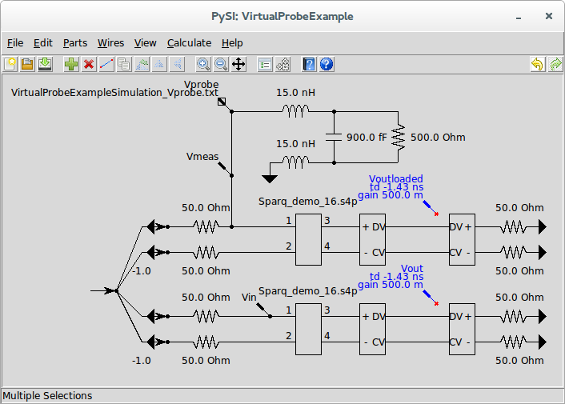
Before creating the output waveforms, you need to check that the calculation properties are appropriate. See Setting Calculation Properties for Virtual Probing↑ for more information. Here we use the following settings:

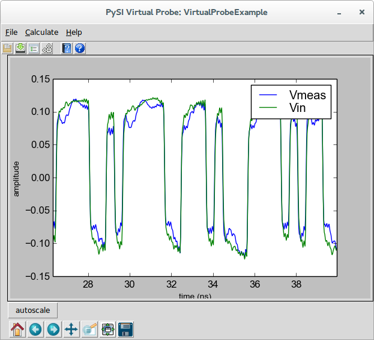
Amazingly, the new input waveform without the probe loading effects looks much better.
It’s always a good idea to invoke View Transfer Parameters↓ to view the transfer parameters in the S-parameter Viewer↓. Selecting Vin due to Vprobe, we see:
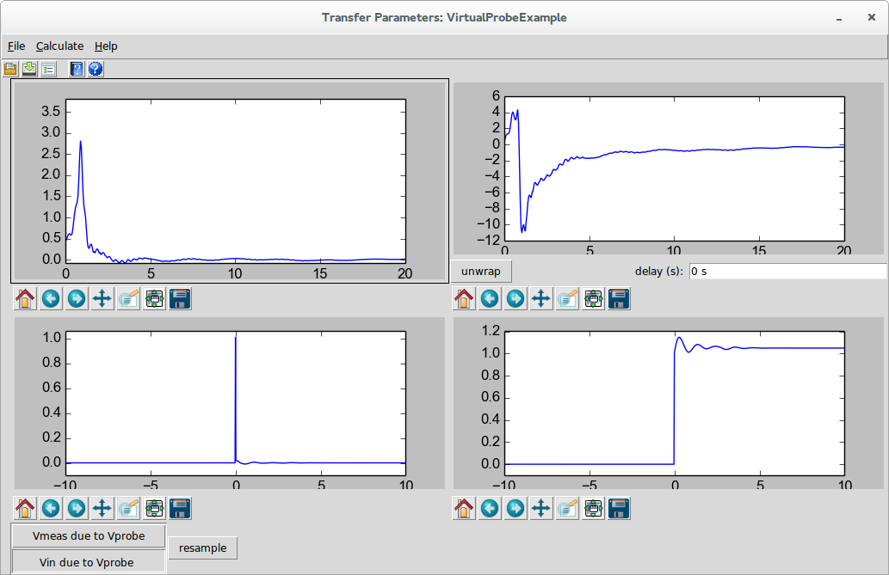
This is the filter that was created to convert the probed waveform to the waveform that would be present without the probe loading effects. Here we see a resonance at around 1 GHz accounting for a resonant cavity in the probes response (this would not be a great probe in real life). We see this resonance in the impulse and step response and fortunately it dies down before 10 ns, so the calculation settings are okay for this situation.
Now let’s go back to the schematic and view the output waveform. Disconnect the Vin output probe and connect the Voutloaded output probe like this:
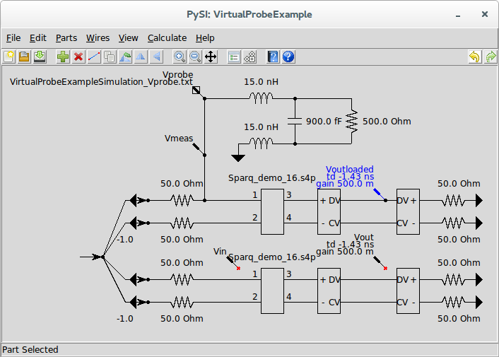
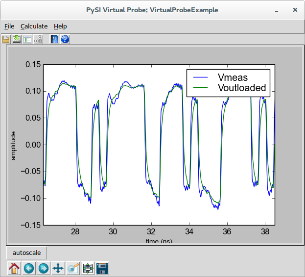
Note that because we applied the -1.43 ns delay and the half gain, they resemble each other. This is an example of using virtual probing to simply probe at a different location in the circuit than is actually being probed.
This portion of the example does not give us what we really want. We want to see what the output waveform would be were the probe not loading the system. For this, we go back to the schematic, and disconnect the two output probes at the input and connect the output probes at the output, like this:
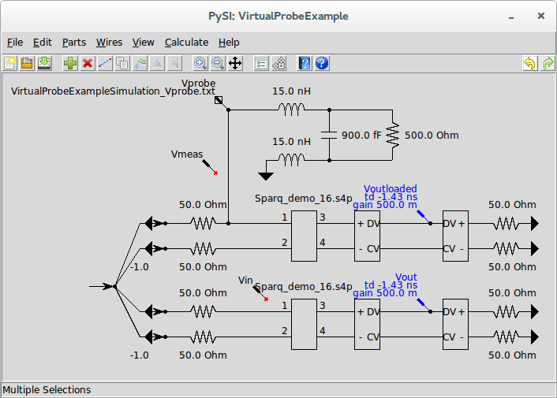
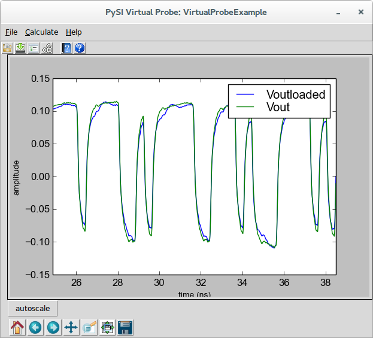
Here we see a not so negligible difference between the output waveforms with and without the probe loading accounted for.
Here, we were able to probe at the input and produce an output waveform at the receiver that is independent of the probe effects. In fact, if we simply probe the transmitter driving a known termination with known probe effects, we could have gotten this same result. Furthermore, we’d be able to replace the four-port backplane with varieties of corner cases to test compliance, for example.
Invoke View Transfer Parameters↓ to view the transfer parameters in the S-parameter Viewer↓. Selecting Vout due to Vprobe, we see:
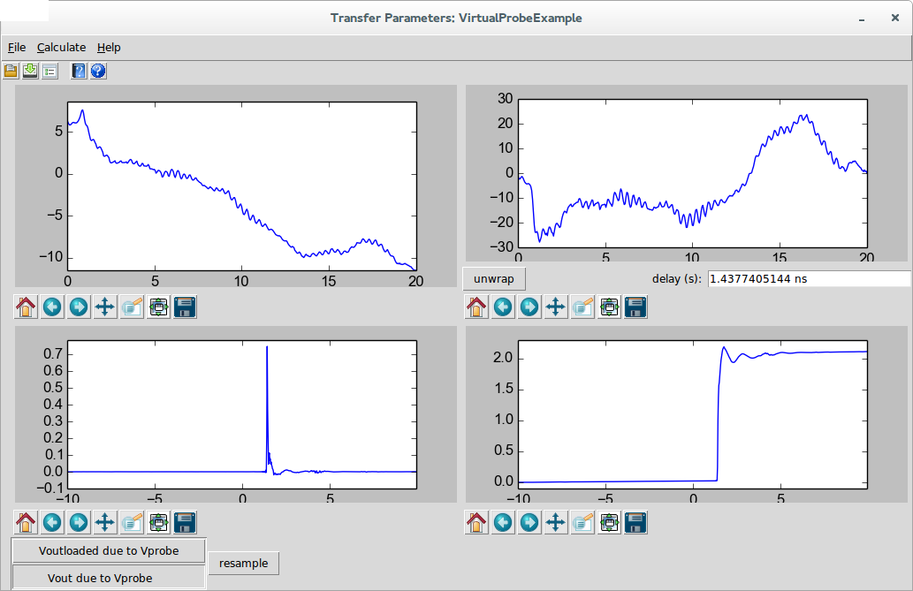
In the end, you can connect all of the output probes and run the calculation and save all of the waveforms by invoking Save Waveforms↓ from the Simulator Dialog↓ and save all of the transfer parameters by invoking Save S-parameter File↓ in the S-parameter Viewer↓. Note that the transfer parameters will be an .s4p file with only S11, S21, S31, and S41 defined according to the ordering of the transfer parameters shown.